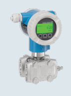
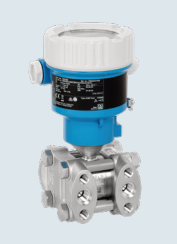

Fast Group Engineering cung cấp cảm biến chênh áp Deltabar PMD75B Endress+Hauser chính hãng tại Việt Nam — đầy đủ chứng từ nhập khẩu, CO/CQ và bảo hành chính hãng.



Liên kết nên mở tiếp
Chênh áp (differential pressure – DP) là một trong những đại lượng "đa năng" nhất trong nhà máy: cùng một nguyên lý đo chênh lệch áp giữa hai điểm, kỹ sư có thể suy ra lưu lượng, phát hiện tắc bộ lọc, hay đo mức trong bồn kín. Deltabar PMD75B là transmitter chênh áp cao cấp của Endress+Hauser cho các bài toán này, với nền tảng số Bluetooth/Heartbeat/HistoROM.
Ba bài toán DP kinh điển
- Đo lưu lượng theo chênh áp: đặt qua tấm orifice/venturi, DP tỷ lệ với bình phương lưu lượng. Rẻ và phổ biến cho hơi, khí, chất lỏng.
- Giám sát tắc bộ lọc/filter: đo chênh áp hai đầu phin lọc; DP tăng nghĩa là lọc bẩn dần → lên lịch thay lọc đúng lúc, tránh vừa thay sớm lãng phí vừa để tắc gây sự cố.
- Đo mức bồn kín/bồn áp lực: đo chênh áp giữa đáy và đỉnh bồn để suy ra mức, bù áp khí phía trên.
Thông số kỹ thuật quan trọng (theo tài liệu)
| Hạng mục | Giá trị (theo catalog/TI) |
|---|---|
| Nguyên lý | Chênh áp (DP) / cả gauge & absolute |
| Dải đo | 10 mbar đến 40 bar (bản gauge/abs tới 160/240 bar) |
| Độ chính xác | ±0,035 % |
| Nhiệt độ quá trình | -40 đến +110 °C |
| Kết nối quá trình | IEC61518, DIN19213, coplanar, NPT¼-18, RC¼; mặt bích ASME RF, EN1092-1, JIS RF |
| Vật liệu tiếp xúc | Kim loại |
| Tín hiệu / truyền thông | 4–20 mA HART; PROFINET over Ethernet-APL; PROFIBUS PA |
| Tính năng | Bluetooth, màn hình đồ họa, Heartbeat, HistoROM |
Lưu ý biên tập: dải đo DP xuống tới 10 mbar rất nhạy — chọn cell phù hợp và lưu ý sai số tĩnh áp (static pressure) trong bồn áp lực. Đối chiếu TI đúng mã đặt hàng.
Cách đọc datasheet & chọn dải
- Chọn cell DP sát dải làm việc: như mọi phép đo áp, turndown lớn giảm độ chính xác.
- Chú ý static pressure: khi đo mức/lưu lượng ở áp tĩnh cao, sai số do áp tĩnh cần được tính; đọc kỹ đặc tính trong TI.
- Kết nối coplanar vs conventional: coplanar gọn, dễ lắp manifold; chọn theo tiêu chuẩn nhà máy.
Lắp đặt manifold van & kinh nghiệm
Điểm đặc thù của DP là cụm van manifold (3 ngả hoặc 5 ngả) để cô lập, cân bằng và xả — thao tác đúng trình tự khi khởi động/hiệu chỉnh zero là kỹ năng bắt buộc:
- Cân bằng (equalize) trước khi zero: mở van cân bằng để hai phía cùng áp, sau đó chỉnh zero — sai trình tự dễ làm hỏng cell do quá áp một phía.
- Xả khí/xả cặn: với chất lỏng cần xả khí, với khí cần xả nước ngưng ở chân impulse line.
- Bảo ôn/heat tracing cho môi chất dễ đóng băng/kết tinh.
- Lỗi thường gặp: một bên impulse line tắc/rò khiến DP trôi hoặc lệch — kiểm tra manifold và đường xung áp trước khi nghi cell.
Ưu điểm, hạn chế, khi nào KHÔNG dùng
Ưu điểm: đa dụng (lưu lượng/lọc/mức bồn kín), độ chính xác cao ±0,035 %, dải rộng, công cụ số mạnh. Hạn chế/không phù hợp: DP dùng impulse line vẫn có nhóm sự cố tắc/rò — với đo mức bồn áp lực khắc nghiệt, cân nhắc electronic DP (FMD71/72); đo DP dải rất thấp cho HVAC/buồng sạch nên dùng PMD55B.
Hiệu quả kinh tế (TCO)
Một transmitter DP chất lượng giúp giám sát tắc lọc đúng lúc (tiết kiệm phin lọc và tránh dừng máy) và đo lưu lượng ổn định. Chi phí ẩn của DP nằm ở bảo trì impulse line/manifold — lắp đúng và chọn vật liệu phù hợp sẽ giảm phần lớn. Ở vòng đo quan trọng, độ ổn định và Heartbeat của PMD75B giúp giãn chu kỳ hiệu chuẩn.
FastGroup hỗ trợ gì
FastGroup cung cấp thiết bị Endress+Hauser chính hãng tại Việt Nam. Với Deltabar PMD75B, chúng tôi hỗ trợ: xác định bài toán DP (lưu lượng/lọc/mức) và chọn dải cell, tư vấn manifold và phụ kiện lắp đặt, so sánh DP truyền thống vs electronic DP, đối chiếu datasheet theo mã đặt hàng, hỗ trợ nhập khẩu và cung cấp CO/CQ theo từng đơn hàng.
Kết luận & liên hệ
Deltabar PMD75B là "con dao đa năng" cho đo chênh áp: lưu lượng, giám sát lọc và mức bồn kín. Để chọn đúng dải và phụ kiện, cùng báo giá chính hãng, liên hệ FastGroup.
Câu hỏi thường gặp (FAQ)
1. PMD75B đo được gì? Chênh áp để suy ra lưu lượng, tình trạng tắc lọc, hoặc mức bồn kín.
2. Vì sao cần van manifold? Để cô lập, cân bằng và xả — bảo vệ cell và hiệu chỉnh zero đúng cách.
3. Độ chính xác bao nhiêu? ±0,035 % theo catalog.
4. Khi nào chọn electronic DP thay vì PMD75B? Khi muốn loại bỏ impulse line và sai số cột trên bồn áp lực → FMD71/72.
5. Có đầy đủ CO/CQ không? FastGroup cung cấp hàng chính hãng kèm CO/CQ và giấy tờ nhập khẩu theo từng đơn hàng.
Nguồn tham khảo
- Endress+Hauser – Pressure measurement (FA00004P00EN2526), Pressure selection (CP00022)
- Endress+Hauser – Technical Information (TI) Deltabar PMD75B, endress.com (đối chiếu theo mã đặt hàng)
Nhận báo giá Endress+Hauser chính hãng
Gửi mã model, điều kiện quá trình, kết nối và yêu cầu chứng nhận qua email minhduc@fastgroup.vn hoặc Zalo/điện thoại (+84) 938 888 958. Hoặc gửi RFQ qua biểu mẫu và tra mã model trực tiếp trên trang.